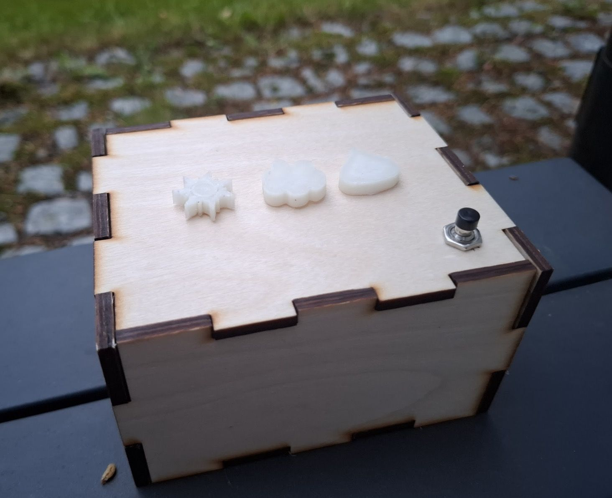
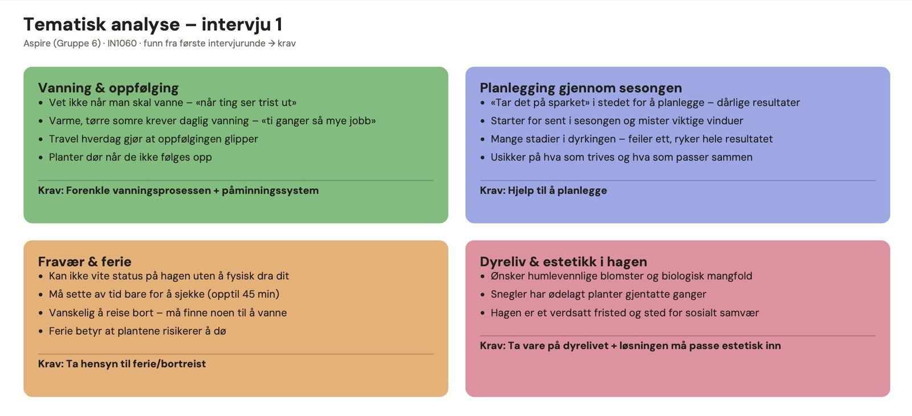
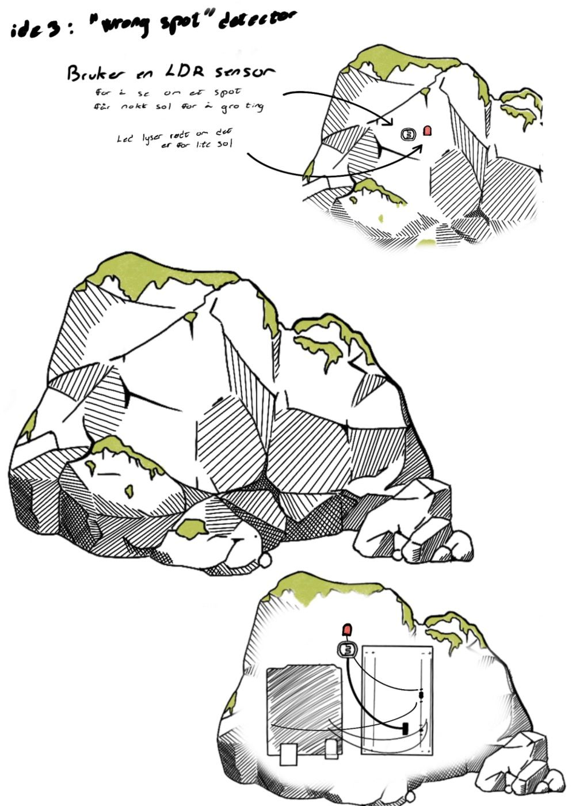
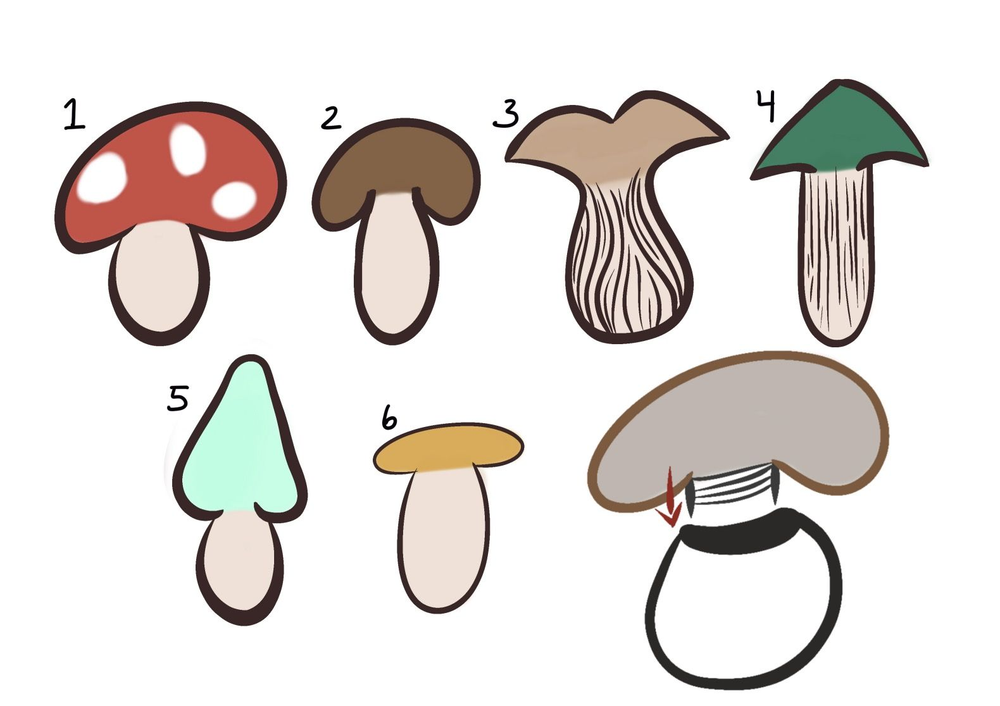
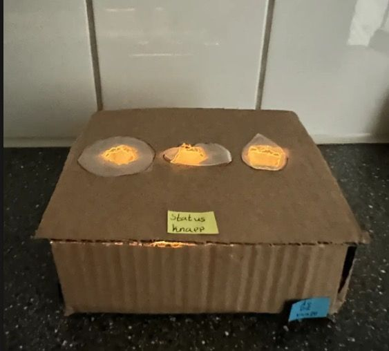
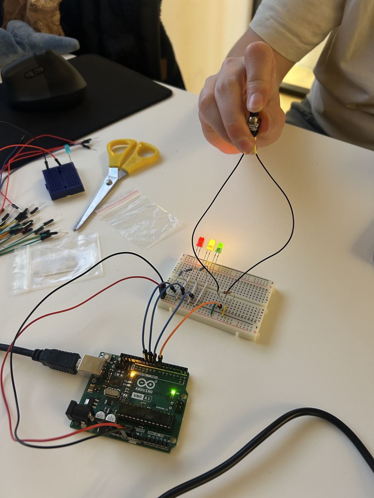
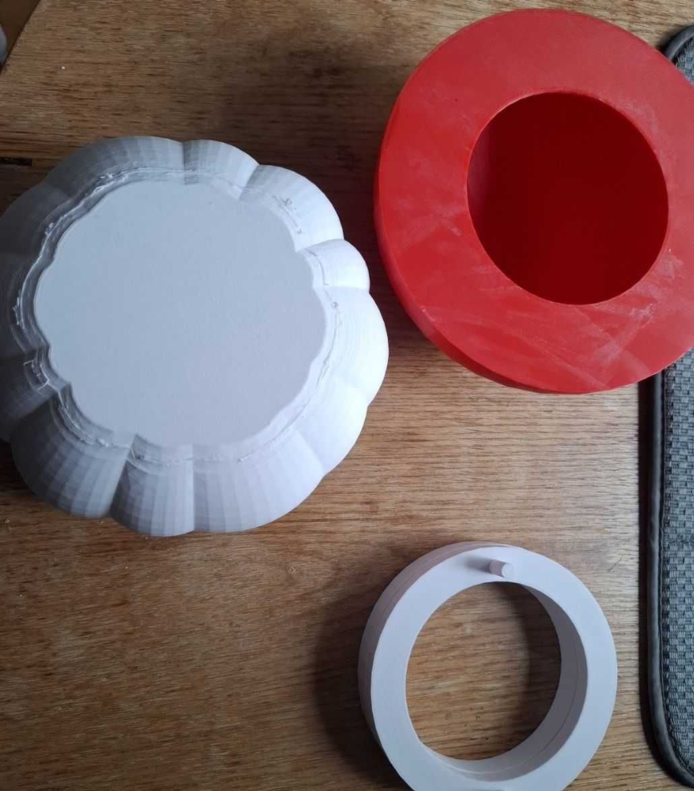
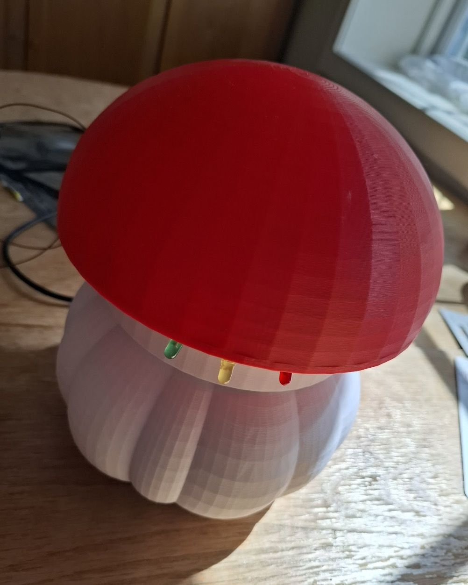
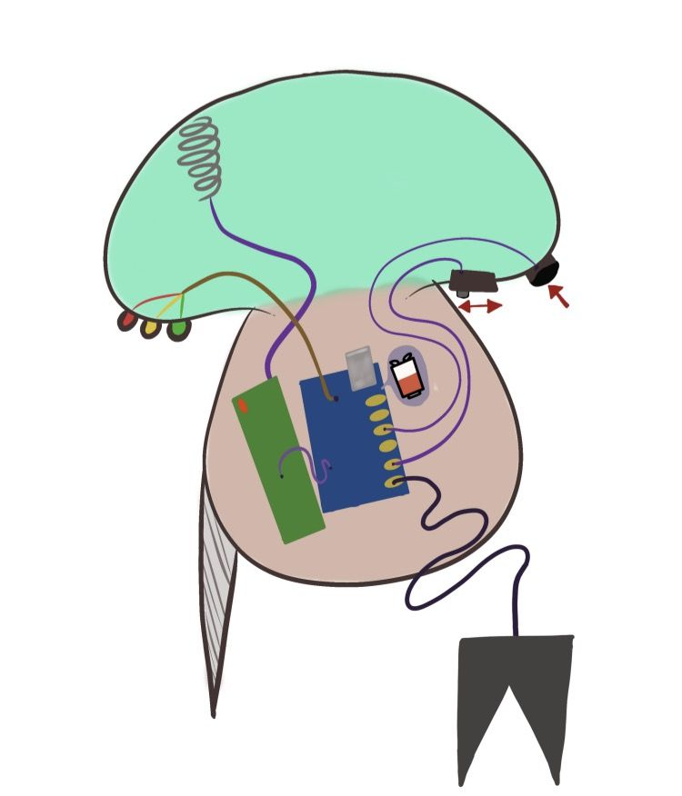

Aspire
En jordfuktighetsmåler for hagen. Du trykker på en knapp, og et lys viser om jorda er tørr, passe fuktig eller våt, enten du står ute ved bedet eller inne i huset.
- Emne
- IN1060 Bruksorientert design, UiO
- Periode
- Februar–juni 2026
- Team
- Fire studenter
- Min rolle
- Arduino-kode, teknisk løsning og teknisk rapport

Problemet
Årets tema i emnet var «sted», og vi valgte hagen. Vi snakket med tre hagebrukere med ulike typer hager: to private hager og et felles hageområde i et borettslag.
Alle tre fortalte det samme: det er vanskelig å holde oversikt over hva plantene trenger, særlig i perioder der man ikke er i hagen hver dag. Fuktigheten i jorda er vanskelig å bedømme med øyet, og for den som har en parsellhage et stykke unna, betyr usikkerheten ekstra turer.
Hvordan kan vi gjøre det enklere for hagebrukere å holde oversikt over når hagen trenger vann?
Arbeid med brukerne
Vi brukte kvalitative metoder for å forstå brukerne på deres egne premisser. Jeg hadde fire møter med min bruker gjennom semesteret: et første intervju, et oppfølgingsintervju, en workshop og en brukertest av den ferdige prototypen.
- Intervju om rutiner, erfaringer og hva som er vanskelig i hagen.
- Observasjon i brukernes egne hager, for å se hva de faktisk gjør, ikke bare hva de sier at de gjør.
- Workshop der brukerne vurderte skisser og papp-prototyper og var med på å bestemme form og funksjon.
- Brukertest av den ferdige løsningen i hagen.
Det var ikke mulig å samle alle brukerne samtidig, så vi holdt individuelle workshoper. Det ga hver bruker mer plass og lot oss tilpasse oss den enkeltes hage.

Fra skisse til prototype
-
Tema og idé
Vi tolket temaet «sted» bredt og vurderte alt fra barnehager og eldrehjem til skolen før vi landet på hagen. Før vi møtte brukerne besøkte vi Botanisk hage i Oslo for å forstå mer om planter og stell.
-
Intervjuer og analyse
Intervjuene og observasjonene viste at problemet ikke var mangel på kunnskap, men mangel på oversikt over tid.
-
Skisser, papp-prototyper og workshop
Vi skisserte flere formkonsepter, blant annet en stein og et lite hus, og bygde enkle papp-prototyper med lys. I workshopen pekte brukerne ut retningene de syntes var mest relevante, og vi landet på soppen.



-
Funksjonell prototype
Planen var å la soppen og husenheten snakke trådløst over LoRa-radio, men forbindelsen ble ikke stabil nok. For å beholde kjernefunksjonen koblet vi i stedet to Arduino Uno-kort sammen over I2C, som simulerer langdistansen. Soppen ble 3D-printet, og husenheten ble laget i laserkuttet tre.

Første test av lysene på koblingsbrett. 
3D-printede deler av soppen. -
Brukertest
Til slutt testet brukerne den ferdige løsningen. Målet var at det skulle holde med ett knappetrykk og ett tydelig lys, uten skjerm, tall eller meny.
Slik virker det
Systemet har to deler. Soppen står i bedet med en jordfuktighetssensor, tre lysdioder og en knapp i en av prikkene på hatten. Husenheten står inne og viser status bak tre utskårne symboler: sol for tørt, sky for passe og dråpe for vått.
Soppen fungerer alene: trykker du på den, måler den jorda der og da. Trykker du på husenheten, sender den bokstaven «R» til soppen over I2C, venter på målingen og får statusen tilbake som ett tall. Begge enhetene sover mellom målingene og våkner på knappetrykk, slik at soppen kan stå ute lenge.
Prøv måleren
Sensoren gir en råverdi der høyere tall betyr tørrere jord. Soppen tar fem målinger, bruker gjennomsnittet og sammenligner med tersklene vi fant ved å teste i ekte jord.
Slik oversetter soppen råverdien til en status:
Status evaluateSensor(int raaverdi)
{
if (raaverdi > 430) return CRITICAL; // tørt, rødt lys
if (raaverdi >= 230) return NORMAL; // passe, gult lys
return GOOD; // vått, grønt lys
}Hele koden ligger her: soppen og husenheten.


Min rolle
Brukermøter, analyse og skisser gjorde vi sammen i gruppa. Jeg tok i tillegg ansvar for den tekniske delen:
- Skrev Arduino-koden for begge enhetene, med statusmodell, gjennomsnittsmåling, I2C-kommunikasjon og strømsparing.
- Kalibrerte tersklene ved å teste sensoren i jord med ulik fuktighet.
- Sto for innkjøp av komponentene, siden jeg visste best hva vi trengte.
- Skrev den tekniske rapporten og laget diagrammene.
- Hjalp til med å modellere soppen på nytt for 3D-print da de første filene ikke var brukbare.
- Filmet og redigerte prototypevideoen, og oppdaterte prosjektsiden.
Hva jeg lærte
Brukerne kom nesten alltid med noe vi ikke hadde tenkt på selv. I de første intervjuene stilte jeg for mange lukkede spørsmål. Etter hvert ble jeg flinkere til å holde meg tilbake og la brukeren styre samtalen.
Teknisk lærte jeg at en enkel plan B kan redde et prosjekt. Da LoRa-radioen ikke fungerte, var det bedre å levere en stabil løsning over I2C enn en trådløs løsning som bare virket av og til.
Jeg lærte også at faste møter der alle viser fram det de har gjort, fanger opp problemer før de blir store. Det tar jeg med meg til neste prosjekt.